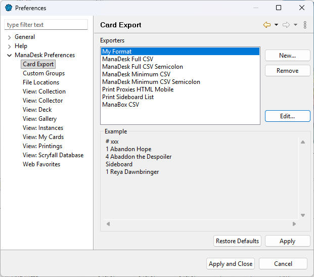
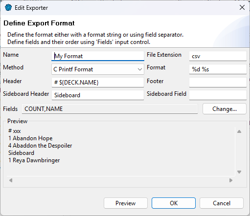

Need a format ManaDesk doesn't have — for a forum, a printed checklist, another program? Create your own. It then appears in every export list, after ManaDesk's formats.
Open . The page lists the export formats; select one to see an example of its output. Create, edit or remove your own formats from there.

The Edit Exporter dialog shows a live Preview as you type.

| Field | Meaning |
|---|---|
| Name | The name shown in the export lists. |
| Fields | The card fields to write, in order (for example COUNT,NAME). |
| Method | How each line is built:
|
| Header | A line written at the top (or between decks). ${DECK.NAME} is replaced by the deck's name.
It follows the export's Generate header row option. |
| Sideboard Header | A line written before the sideboard cards; leave empty for none. |
| Footer | A line written at the end of the file. |
| File Extension | The default extension of the exported file (txt, csv...). |
See also: Exporting